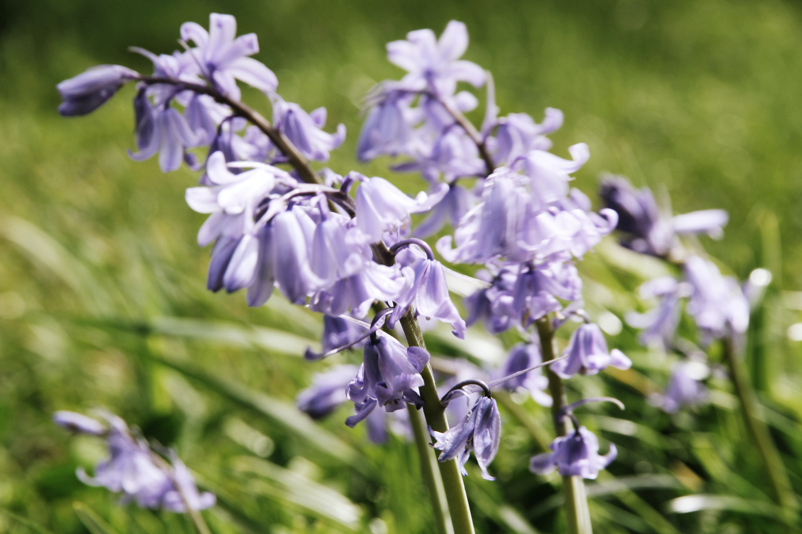
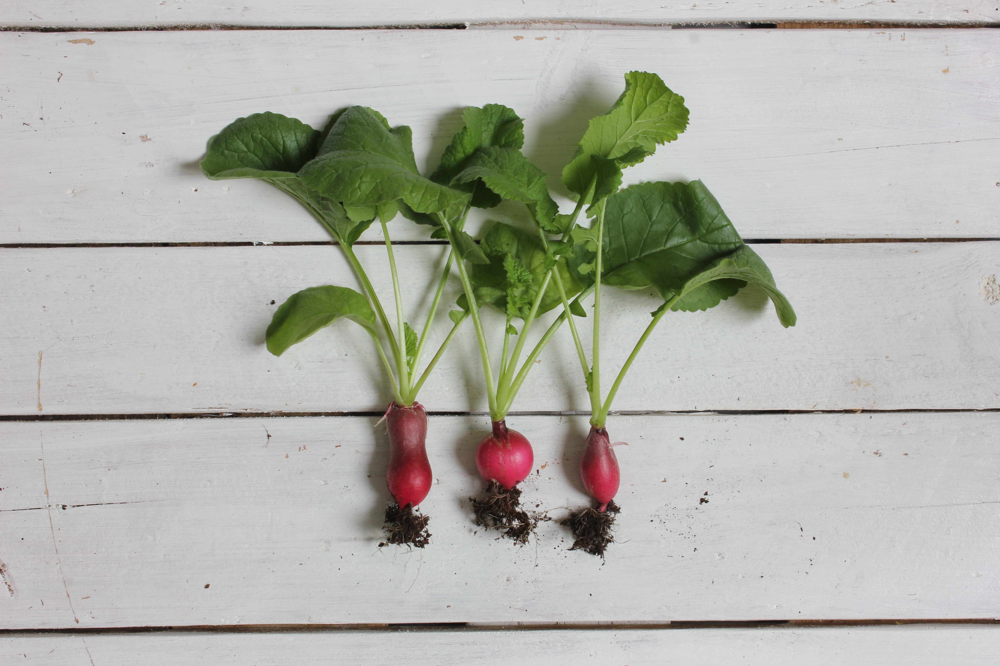
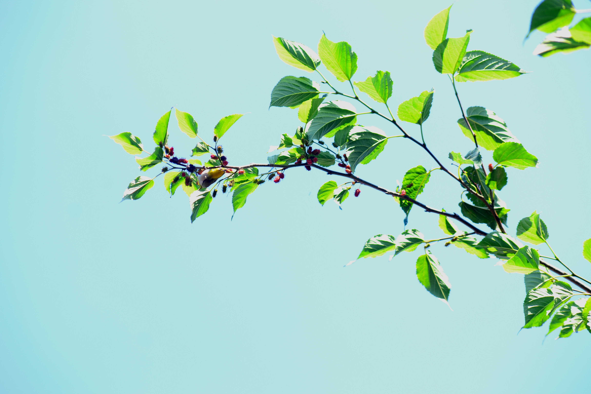

오월
4. 전체 작물 소개
♬약용작물♬

산양삼, 더덕, 도라지, 수세미, 백하수오, 적하수오
♬밭 작물♬

조선무우, 늙은호박, 조선무우시래기(토종씨앗협회)
♬동물♬

양봉, 산양(이름 : 잭슨), 미니어쳐피그
♬약용나무♬

엄나무(엄나무순,나무), 헛개나무(열매), 가시오가피(나무,열매), 구찌뽕(나무,뿌리),오가피(나무),뽕나무
뒤로가기
더 자세한 정보를 원하시면, 아래를 클릭해주세요^-^
오월소개
BUSINESS 비즈니스
계절별 작물 소개
전체 작물 소개